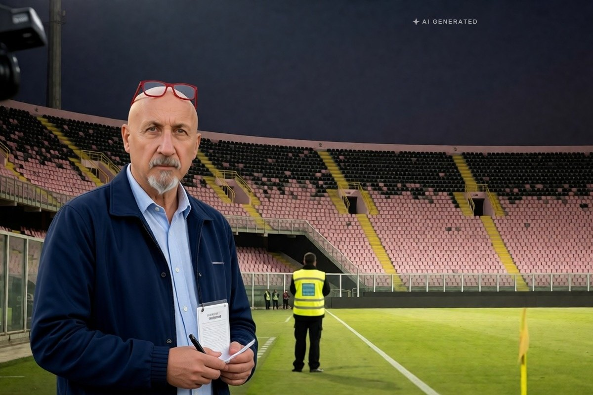

Cronaca · 3 novembre 2026
Steward aggredito al Barbera, Daspo di 10 anni al capo della Curva Nord

È la durata massima prevista dalla legge. Il provvedimento del questore riguarda uno storico capo ultrà, che aveva già avuto tre Daspo, e suo figlio, colpito da un divieto di un anno.
di Franco Zanghì
Il questore di Palermo ha emesso un Daspo di 10 anni, la durata massima consentita dalla legge, nei confronti di uno storico capo della Curva Nord dello stadio Renzo Barbera. Il provvedimento riguarda il pestaggio di uno steward. Al figlio dell'uomo è stato notificato un divieto di un anno.
Il fatto
L'episodio risale al 23 agosto, durante Palermo-Juve Stabia. Secondo la ricostruzione della polizia l'uomo ha colpito lo steward con un violento calcio al petto; poi alcuni ultrà hanno accerchiato il lavoratore e il figlio del capo ultrà gli ha dato un pugno al volto. Le indagini sono state svolte dalla divisione anticrimine della questura.
Per il padre, che aveva già ricevuto tre Daspo, oltre al divieto di accesso ai luoghi dove si svolgono manifestazioni sportive è previsto l'obbligo di firma in un ufficio di polizia; il giudice per le indagini preliminari ha convalidato la misura. Entrambi sono stati denunciati alla procura di Palermo: per loro vale la presunzione di innocenza e sarà un giudice a stabilire le responsabilità penali.
Il Daspo è una misura di prevenzione, non una pena: la decide il questore e serve a tenere lontano dagli stadi chi è considerato pericoloso, prima e indipendentemente da un processo. La durata massima di 10 anni è riservata ai casi più gravi e a chi è già stato destinatario dello stesso provvedimento in passato.
Chi è lo steward
Lo steward è la persona che lavora allo stadio per gestire l'ingresso, il deflusso e la sicurezza del pubblico. Non ha i poteri di un agente di polizia: controlla i biglietti, indica i posti, interviene per segnalare. Quando viene aggredito lui, viene colpito l'anello più esposto e meno tutelato della sicurezza negli stadi.
Il punto
Dieci anni sono il massimo che la legge consente, e in un caso come questo il massimo è la risposta giusta: chi ha già collezionato tre Daspo e torna a colpire un lavoratore non è un tifoso caldo, è una persona che considera la curva un territorio proprio.
Resta però una domanda che il provvedimento non risolve: se tre Daspo non sono bastati a tenere quest'uomo lontano dai problemi, il quarto, pur lungo, che effetto avrà. E ne resta un'altra, più concreta: chi protegge gli steward, che stanno fisicamente in mezzo fra la curva e il campo, con una pettorina e nessun potere.
Fonti
- LiveSicilia, «Palermo, steward aggredito: Daspo di 10 anni al leader della Curva Nord», 31 ottobre 2026
- PalermoToday, «Steward aggredito allo stadio Barbera: Daspo di 10 anni per un ultras, un anno al figlio», 31 ottobre 2026
- MeridioNews, «Palermo, dieci anni di Daspo al leader della Curva Nord», 31 ottobre 2026
- Provvedimento della Questura di Palermo, divisione anticrimine, come riferito dalle testate citate
I nomi delle persone colpite dai provvedimenti, pubblicati da alcune testate, non vengono riportati: si tratta di misure di prevenzione e di denunce, non di condanne.